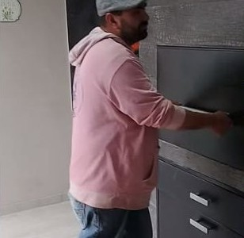

Puertas pantográficas
Frentes que abren hacia arriba y dejan libre la boca de la parrilla. Consultá por las medidas y el espacio necesario para la apertura.

Frentes que abren hacia arriba y dejan libre la boca de la parrilla. Consultá por las medidas y el espacio necesario para la apertura.

Hojas metálicas para cerrar el espacio inferior y tener a mano los accesorios del asado.

Combiná el cierre de la parrilla con las puertas inferiores para darle continuidad a todo el conjunto.
Con una foto de frente y las dimensiones del hueco podemos conversar sobre tu proyecto.
Consultar al taller →